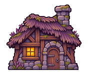

CENTRAL DE DESENVOLVIMENTO
As Ilhas da Fortuna
ganham forma.
Baixe as artes, leve a documentação para a outra conta e acompanhe o que vem a seguir.
- 7 personagens
- 21 portraits
- 4 lotes reunidos

ARQUIVOS PARA CONTINUAR
Escolha seu download.
Links diretos do GitHub. Escolha o completo ou comece pelo leve; não precisa baixar os dois.
HTML com casas e forja aplicadas, fundo do Santuário separado e 13 spritesheets reexportados. A revisão artística continua; o site original ainda não foi substituído.
Baixar correção visual · 28,57 MB ↓Precisa das imagens-fonte separadas?3 partes menores
Para reprocessar a arte a partir do pacote leve, baixe as três partes abaixo e extraia na mesma pasta. O pacote completo já contém todas elas.
- {{SOURCES}}
Vai continuar no outro Codex? Extraia o ZIP e envie a pasta ou o pacote à outra conversa. Comece por LEIA_PRIMEIRO.md e PASSAGEM_OUTRO_CODEX.md. Os candidatos e as pendências estão sinalizados nesses arquivos.
Prefere abrir a pasta de arquivos? Ver entregas no GitHub ↗ Conferir hashes
UM RUMO COMPARTILHADO
O que vem a seguir.
Tente outro termo ou estado.
Como as duas contas trabalham juntas
Codex A e Codex B usam o mesmo usuário GitHub. Cada tarefa tem uma conta responsável, uma branch e evidências da entrega. As mudanças chegam ao painel depois de integradas e publicadas.
Ler o fluxo de colaboração ↗EXPLORE AS ILHAS